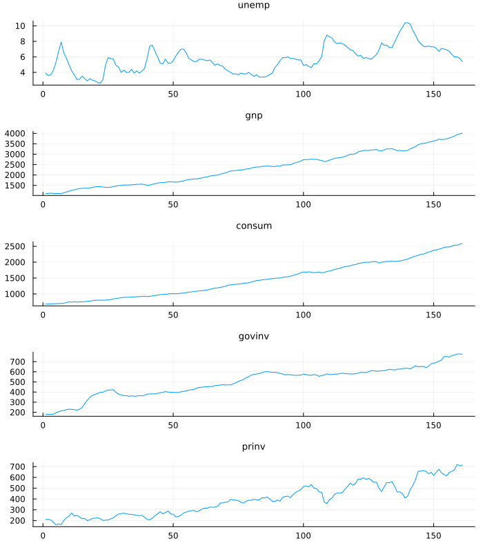
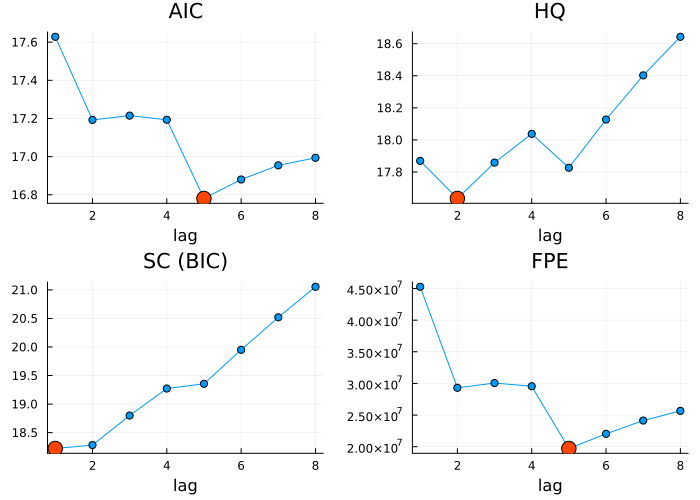
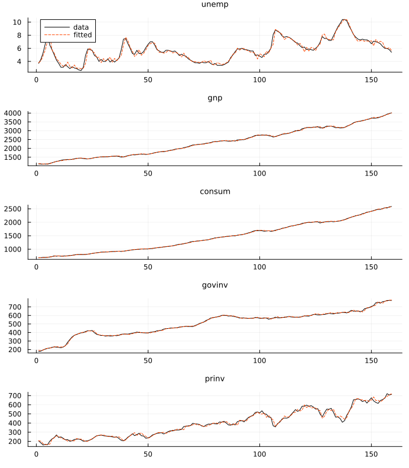
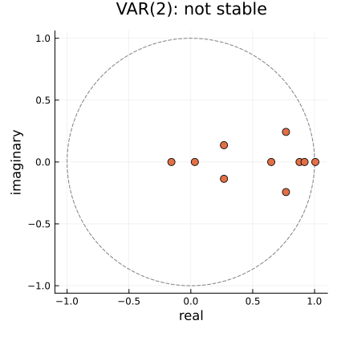
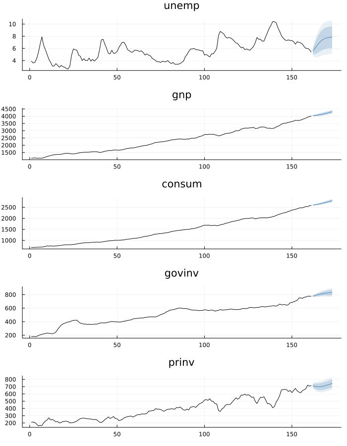
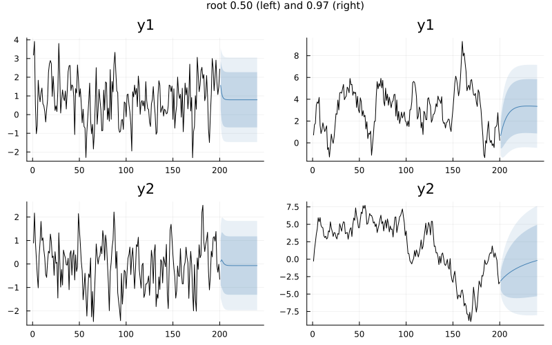
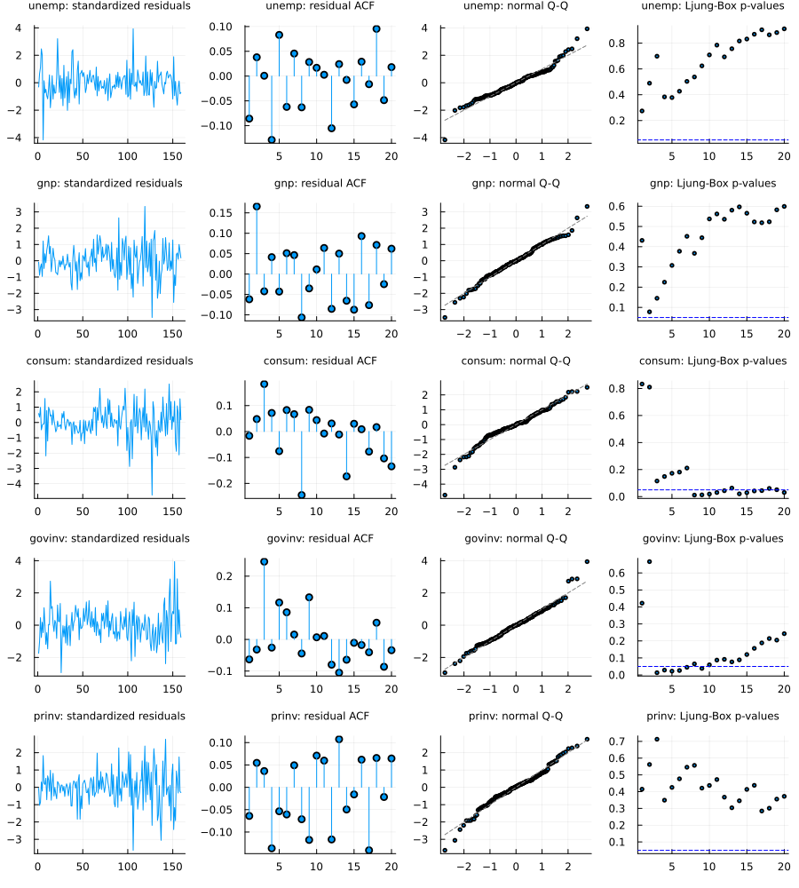

Vector Autoregression
Everything up to here has modelled one series at a time. A vector autoregression models several together, letting each one depend on the recent past of all of them:
\[y_t = \nu + A_1 y_{t-1} + \dots + A_p y_{t-p} + u_t\]
where y_t is a K-vector and each A_j is a K × K matrix. That is the whole model. Its usefulness is that it gives you somewhere to ask the questions a univariate model cannot even phrase: does one series help predict another, and if one is shocked, what happens to the rest.
This chapter fits, selects, checks and forecasts a VAR. The questions it exists to answer have chapters of their own: Causality and Impulse Responses, Cointegration and VECM for series that wander together, and Structural VAR.
Every chart is generated by the @example block above it at build time, and each was also rendered locally and looked at before it was committed.
Fitting one
Y has rows = time and columns = variables — the orientation both reference implementations use, and what the bundled multivariate datasets carry. fit_var accepts anything tsmatrix understands, including the NamedTuple that dataset returns, so no unpacking is needed:
The running example is econ5 — five quarterly US series from Shumway and Stoffer, the canonical small VAR. Look at them first:
using TSAnalytics, Plots
using StatsAPI: coefnames, aic # not re-exported; StatsAPI owns the generics
e = dataset("econ5")
plot(tsmatrix(e); layout = (5, 1), title = permutedims(string.(tsnames(e))),
legend = false, titlefontsize = 9, link = :x, size = (700, 800))
Unemployment cycles; GNP, consumption and the two investment series trend upward together. Hold that thought — series that trend together are the subject of Cointegration and VECM, and a VAR in their levels is the thing that chapter warns about. For the mechanics, fit one anyway:
m = fit_var(e, 2)VAR(2) K=5 T=159 deterministic=:const
variables: unemp, gnp, consum, govinv, prinv
companion roots (moduli, max first): 1.006183, 0.919028, 0.878636, 0.806514, … NOT STABLE
logLik = -2451.9593 AIC = 17.344694 BIC = 18.406265Note the last line of that summary. On this data the fitted VAR(2) is not stable — its largest companion root is just over 1 — which is worth knowing before forecasting from it, and is the sort of thing that is easy to miss if the model does not say so.
The coefficients come back as A[j], a K × K matrix per lag, with a separate det_coef for the deterministic terms:
println("A[1] is ", size(m.A[1]), ", A[2] is ", size(m.A[2]))
println("deterministic block: ", size(m.det_coef))
println("coefnames: ", coefnames(m)[1:3], " … ", coefnames(m)[end])A[1] is (5, 5), A[2] is (5, 5)
deterministic block: (5, 1)
coefnames: [:unemp_l1, :gnp_l1, :consum_l1] … constNeither reference stores it that way — vars returns one flat K × (Kp + ndet) matrix with the deterministic terms last, statsmodels a transposed (ndet + Kp) × K with them first — and they were verified to agree with each other once reordered. Separating the two removes the ordering question from everything built on top. If you want the flat form, coef(m) gives it, in R's order.
Deterministic terms
println(fit_var(dataset("econ5"), 1; deterministic=:none).loglik)
println(fit_var(dataset("econ5"), 1; deterministic=:const).loglik)
println(fit_var(dataset("econ5"), 1; deterministic=:both).loglik)-2543.8672446298033
-2526.2608322565848
-2517.441353124624Five values are available, and they deliberately span both references' vocabularies, which are mutually incomplete:
deterministic | terms | R type= | statsmodels trend= |
|---|---|---|---|
:none | — | "none" | "n" |
:const | 1 | "const" | "c" |
:trend | t | "trend" | no equivalent |
:both | 1, t | "both" | "ct" |
:quadratic | 1, t, t² | no equivalent | "ctt" |
R's type="trend" means a trend with no constant, while statsmodels' trend="ct" means constant and trend. They sound equivalent and are not: on the bundled fixture they differ by 6.15 in log-likelihood, and the mismatch propagates into order selection. That is why the keyword here is spelled like neither of them.
Choosing the order
s = var_select(dataset("econ5"); lag_max=6)VAR lag-order selection (T=155 held fixed, deterministic=:const)
lag AIC BIC HQIC FPE
1 17.714289 18.303339 17.953548 4.935167943088759e7
2 17.318125 18.39805 17.756766 3.324183786900606e7
3 17.358228 18.929028 17.996251 3.468846706719036e7
4 17.310078 19.371753 18.147484 3.321327369158576e7
5 16.904899 19.457449 17.941687 2.231796577268782e7
6 17.013189 20.056614 18.24936 2.515366835181756e7
selected: AIC 5 BIC 1 HQIC 2 FPE 5Four criteria, and they disagree — which is normal, not a problem. Drawn, the disagreement has a shape:
s8 = var_select(e; lag_max = 8)
crit = (("AIC", s8.aic), ("HQ", s8.hqic), ("SC (BIC)", s8.bic), ("FPE", s8.fpe))
panels = map(crit) do (lab, v)
k = argmin(v)
p = plot(s8.lags, v; marker = :circle, legend = false, title = lab, xlabel = "lag")
scatter!(p, [s8.lags[k]], [v[k]]; color = :orangered, ms = 8)
end
plot(panels...; layout = (2, 2), size = (700, 500))
Each criterion is the log-determinant of the residual covariance plus a penalty per parameter, and the penalties differ: on the usual −2 log L scale AIC charges 2 per parameter, HQ 2 log log T and SC log T — about 3.2 and 5.0 here. With K = 5, every extra lag costs 25 parameters, so the heavier penalties turn the curve upward almost at once while AIC and FPE find a dip at lag 5. The honest reading is that the data cannot pin the order down; fit two candidates and compare what they say, rather than trusting one number.
The sample is held fixed, and that is the whole subtlety
Every candidate order is estimated on the same T = n - lag_max observations, so the criteria are comparable with one another. A single fitted model uses all n - p observations available to it, which is more. Both numbers are correct and both references report both:
println("var_select, lag 2 : ", round(s.aic[2], digits=10), " (T = ", s.T, ")")
m2 = fit_var(dataset("econ5"), 2)
println("aic(fit_var(…, 2)): ", round(aic(m2), digits=10), " (T = ", m2.T, ")")var_select, lag 2 : 17.3181247928 (T = 155)
aic(fit_var(…, 2)): 17.3446938647 (T = 159)If you want the selection figure for one order, slice the data yourself — fit_var(Y[lag_max - p + 1:end, :], p) reproduces it exactly.
What the fit looks like
One-step fitted values against the data, equation by equation:
Y = tsmatrix(e)
off = size(Y, 1) - m2.T
nm = string.(tsnames(e))
panels = [begin
p = plot(Y[off+1:end, i]; color = :black, label = "data", title = nm[i],
titlefontsize = 9, legend = i == 1 ? :topleft : false)
plot!(p, m2.fitted[:, i]; color = :orangered, linestyle = :dash, label = "fitted")
end for i in 1:5]
plot(panels...; layout = (5, 1), link = :x, size = (700, 800))
The trending series are fitted almost perfectly, which says less than it seems: predicting this quarter's GNP from last quarter's is easy, and a near-perfect in-sample fit on trending data is exactly how a spurious regression looks too. The residual checks below are the real test.
Stability
m1 = fit_var(dataset("econ5"), 1)
println("roots : ", round.(roots(m1)[1:3], digits=6))
println("is_stable : ", is_stable(m1))roots : [1.005627, 0.966417, 0.883875]
is_stable : falseroots_plot shows the companion eigenvalues against the unit circle — the VAR(2) on the same data has one just outside it:
plot(roots_plot(m2); size = (420, 420))
This is the one convention in this chapter most likely to cause real harm, because getting it wrong silently inverts a stability test.
vars::roots() returns the moduli of the companion-matrix eigenvalues: stable if all < 1. statsmodels' .roots returns the roots of the characteristic polynomial: stable if all |·| > 1. They are exact reciprocals, verified on five fixtures to between 1.1e-16 and 9.3e-15.
roots follows R, because "the largest root is 0.97, close to the boundary" is the reading practitioners expect. For statsmodels' convention take 1 ./ roots(m).
Forecasting
f = forecast(m2, 4)
println("point is ", size(f.point), ", bands are ", size(f.lower))
println("unemp: ", round.(f.point[:, 1], digits=4))point is (4, 5), bands are (4, 5, 2)
unemp: [5.5406, 5.9041, 6.3234, 6.7165]plot draws a VARForecast as one fan chart per variable:
plot(forecast(m2, 12); history = dataset("econ5"), size = (700, 900))
A VAR forecast is horizon × K points with horizon × K × levels bands, so it returns a VARForecast rather than the univariate Forecast nine other model families use. Generalising that type would have been a breaking change to all of them.
The intervals come from the df-adjusted Σ accumulated through the moving-average representation, and — as in both references — they treat the estimated coefficients as known, so they are slightly too narrow. The same honesty applies as to fit_ets's sigma2.
How fast they widen is the stability story again. Two simulated bivariate VAR(1)s, one with its largest root at 0.50 and one at 0.97:
using DelimitedFiles
fx(name) = readdlm(joinpath(pkgdir(TSAnalytics), "test", "fixtures", "var", name), ','; skipstart=1)
st, nu = fx("var2_p1.csv"), fx("var2_nearunit.csv")
println("largest roots: ", round(roots(fit_var(st, 1))[1], digits = 2), " and ",
round(roots(fit_var(nu, 1))[1], digits = 2))largest roots: 0.5 and 0.97plot(plot(forecast(fit_var(st, 1), 40); history = st),
plot(forecast(fit_var(nu, 1), 40); history = nu);
layout = (1, 2), size = (800, 500), plot_title = "root 0.50 (left) and 0.97 (right)",
plot_titlefontsize = 10)
On the left the forecast reaches the mean within a few steps and the band stops growing: beyond that the past carries no information. On the right both take dozens of steps — a root near one means a shock is forgotten slowly, so the forecast stays tied to where the series is now and the uncertainty keeps accumulating. At a root of exactly one it would never stop.
Checking a fitted VAR
The first question to ask of a fitted VAR is whether what it left behind looks like white noise. var_diagnostics runs the standard set in one call:
d = var_diagnostics(m2)
d.portmanteauPortmanteau test (adjusted, Hosking)
lags : 10
K, T : 5, 159
statistic : 311.1906 (df = 200)
p-value : 7.77187e-7portmanteau_test— Hosking's multivariate portmanteau, the vector analogue of Ljung-Box. It needslags > p: withlags ≤ pits degrees of freedom are not positive.varsruns anyway and reportsdf ≤ 0; this package refuses. Its power depends on the lag choice, so report the lag with the result.bg_testandes_test— the Breusch-Godfrey LM test and its Edgerton-Shukur small-sample F form. Prefer the F form in short samples.normality_test— multivariate Jarque-Bera, with its skewness and kurtosis halves (they sum to the joint statistic) and, on request, one test per equation, which is how you find which equation fails.arch_lm_test(m; lags)— multivariate ARCH-LM. Its degrees of freedom grow asK⁴, so it runs out of observations quickly at largerK; an infeasible auxiliary regression is refused by name.
d.normalityMultivariate Jarque-Bera normality test (Cholesky-standardized residuals)
joint : 97.308 (df = 10) p = 1.88159e-16
skewness : 16.8678 (df = 5) p = 0.004757448
kurtosis : 80.4402 (df = 5) p = 6.78822e-16
consum JB = 68.707 p = 1.20355e-15
gnp JB = 6.1455 p = 0.0462945395
govinv JB = 21.0839 p = 2.64052e-5
prinv JB = 13.0269 p = 0.0014833772
unemp JB = 55.4594 p = 9.06023e-13The picture to read beside the tests is diagnostic_plot(m): each equation's residuals, and their autocorrelations against the white-noise band.
plot(diagnostic_plot(m2); size = (900, 1000))
The p-values are this package's own upper tails. vars computes every diagnostic p-value as 1 − CDF, which reports 0 for any strong rejection — the same defect as its Granger test, described in Causality and Impulse Responses.
What is not here yet
- Exogenous regressors, restricted VARs and Bayesian priors. The regressor construction would carry exogenous columns untouched, so it is a clean later addition rather than a rewrite.
K = 1. Refused by name, as both references refuse it; a single series is better served byarxorfit_arima.
See also
- Causality and Impulse Responses — what a fitted VAR is for
- Cointegration and VECM — when the series wander together
- Structural VAR — identifying shocks by assumption
- Forecasting and Accuracy — evaluating what comes out of
forecast - Coming from R or Python — every documented divergence in one place
- API: Vector Autoregression